Администрирование отеля (Vue.js)
Добавление CORS (Cross-origin resource sharing) в проект
Добавление CORS в настройки django-проекта:
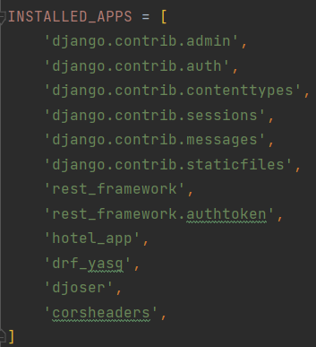
Определение его middleware сверх всех остальных:
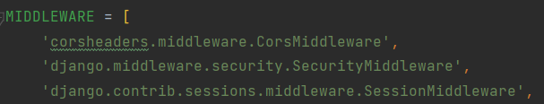
Добавление позволительных доменов:
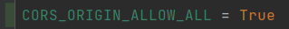
Работа Vue.js
Интерфейсы авторизации и регистрации
На протяжении работы запросы выполнялись с помощью axios:
import axios from "axios";
const instance = axios.create({
baseURL: 'http://127.0.0.1:8000/',
timeout: 1000,
});
export default instance
Первое вхождение на сайт:
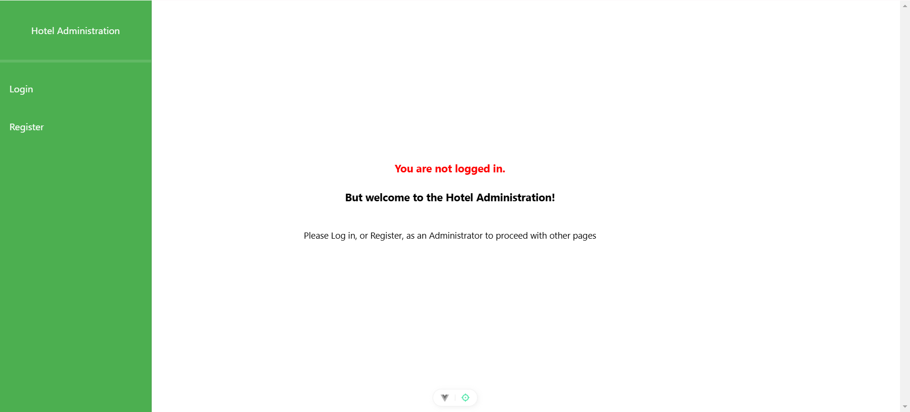
Register page
-- это форма с полями для имени пользователя, электронной почты и пароля. Активная ссылка под кнопкой переносит пользователя на Login page.
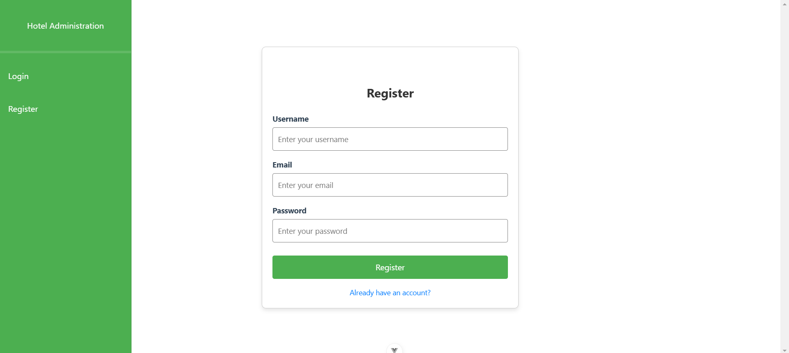
Login page
-- имеет поля для имени пользователя и его пароля. Ссылка под кнопкой логин переадресовывает пользователя на Register page. При успешном логине пользователю присуждается токен, который хранится в базе данных приложения.
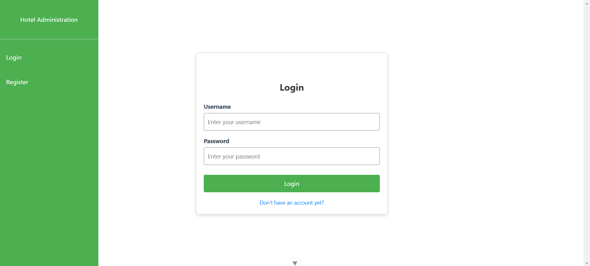
Ту же самую переадресацию делает страница при некорректно введённых данных, которые отсутствуют в системе.
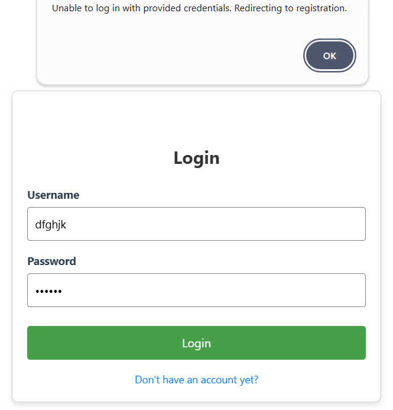
Интерфейсы моделей (списки, страницы редактирования и добавления новых объектов)
Rooms Page
Таким образом встречает сайт успешно залогиненного пользователя. Страница со всеми комнатами отеля состоит из двух столбцов из карточек, в каждой карточке представлена информация об объекте, есть кнопки редактирования и удаления.
function getRooms() {
instance.get('/hotel/rooms/').then(
response => {
if (response.status === 200) {
rooms.value = response.data
}
}
).catch(error => console.log(error))
}
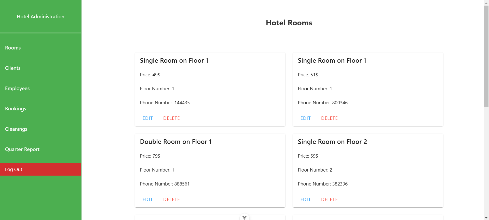
При попытке удаления высвечивает окно для подтверждения действия (аналогично оно высвечивается при попытке удаления всех других сущностей):
function deleteRoom(id) {
if (confirm("Are you sure you want to delete this room?")) {
instance.delete(`/hotel/rooms/${id}/`).then(response => {
if (response.status === 204) {
getRooms()
}
}
).catch(error => console.log(error))
} else {
console.log("Room deletion cancelled.")
}
}
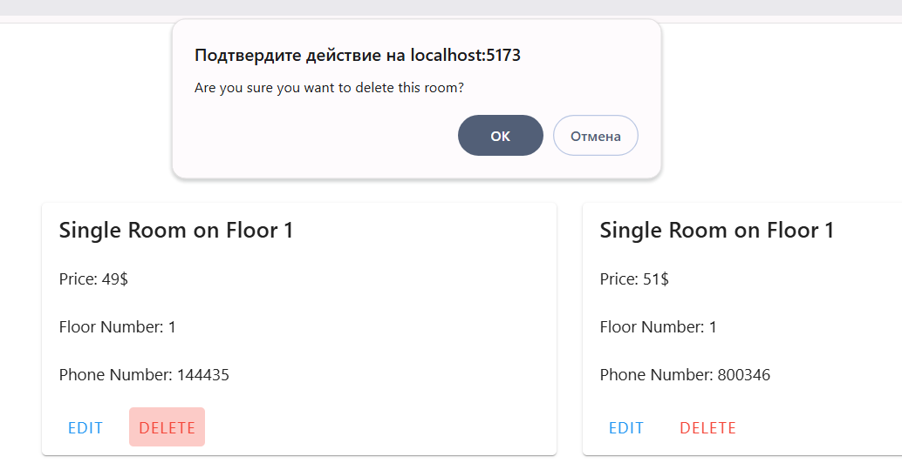
Clients Page
Тот же карточный вид с соответствующими кнопка в каждой. Однако под заголовок добавились две дополнительные опции: добавление и сортировка.
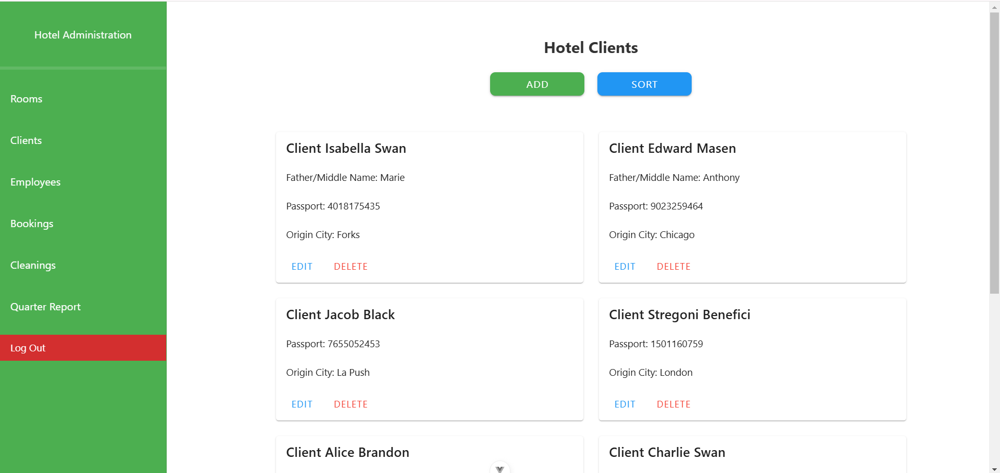
Форма для добавления имеет поля для создания нового клиента.
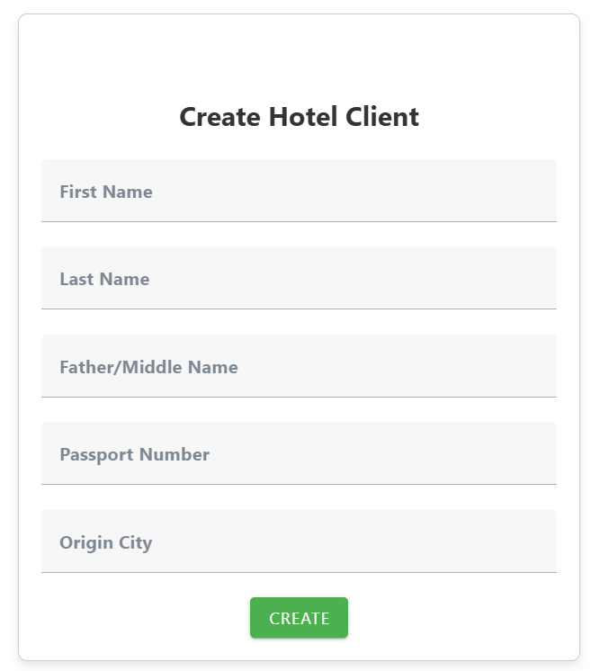
Страница сортировки представляет собой v-data-table с встроенным поиском по таблице, сортировке по каждому столбцу.
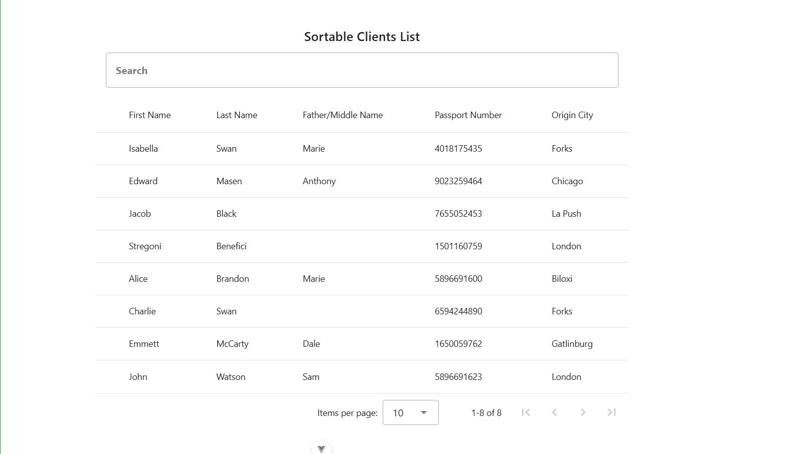
Employees Page
Работники отеля несут немного информации, поэтому уменьшенный масштаб и три столбца. Карточки, кнопки - по классике. Сортировать их не было смысла, поэтому есть только одна кнопка для добавления сущности.
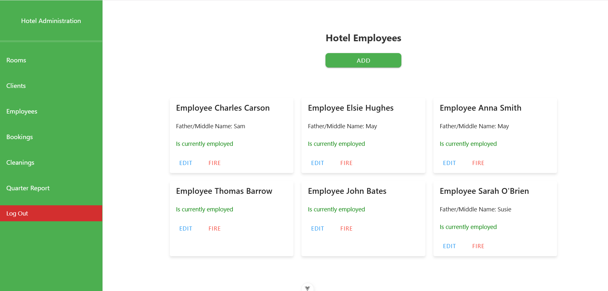
Html-код добавления нового работника отеля:
<template>
<div class="container">
<div class="form-container">
<h1>Create Hotel Employee</h1>
<v-text-field label="First Name" v-model="form.first_name"></v-text-field>
<v-text-field label="Last Name" v-model="form.last_name"></v-text-field>
<v-text-field label="Father/Middle Name" v-model="form.father_name"></v-text-field>
<v-btn @click="createEmployee" color="green">Create</v-btn>
</div>
</div>
</template>
Bookings Page
Страница с бронированиями уже интереснее за счёт наличия внешних ключей.
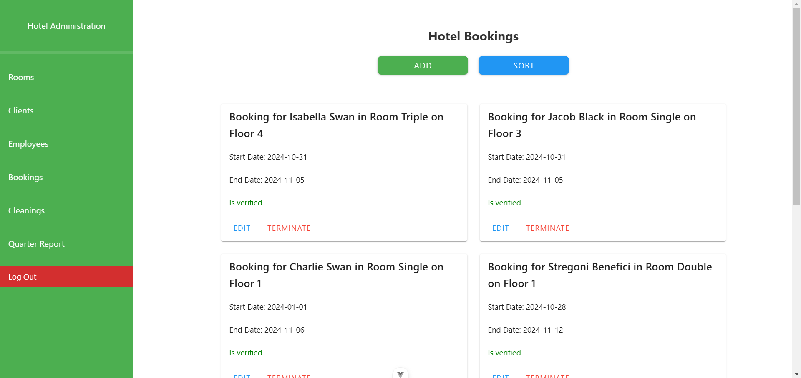
В формах для редактирования и добавления присутствуют select-поля, состоящие из доступных внешних ключей. Для бронирования это клиенты и комнаты.
function getPage() {
instance.get(`/hotel/bookings/${router.currentRoute.value.params.id}/`)
.then(response => {
if (response.status === 200) {
form.value = response.data
}
}
).catch(error => console.log(error))
instance.get('hotel/rooms/').then(response => {
if (response.status === 200) {
room_select.value = response.data
}
}
).catch(error => console.log(error))
instance.get('hotel/clients/').then(response => {
if (response.status === 200) {
client_select.value = response.data
}
}
).catch(error => console.log(error))
}
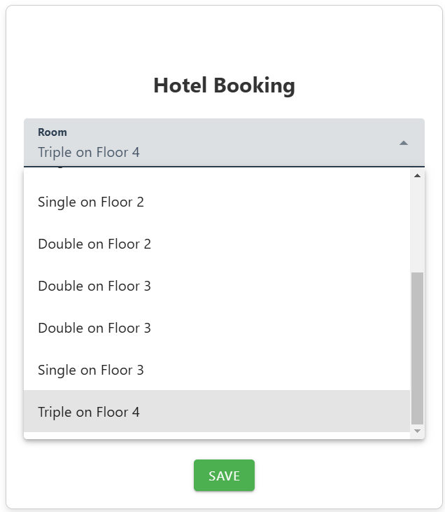
По стандарту - страница сортировки и поиска в виде v-data-table.
<template>
<v-card
title="Sortable Bookings List"
min-height="660"
min-width="850"
flat
flex="true"
align="center"
>
<template v-slot:text>
<v-text-field
v-model="search"
label="Search"
variant="outlined"
hide-details
single-line
></v-text-field>
</template>
<v-data-table
:headers="headers"
:items="bookings"
:search="search"
width="1000"
></v-data-table>
</v-card>
</template>
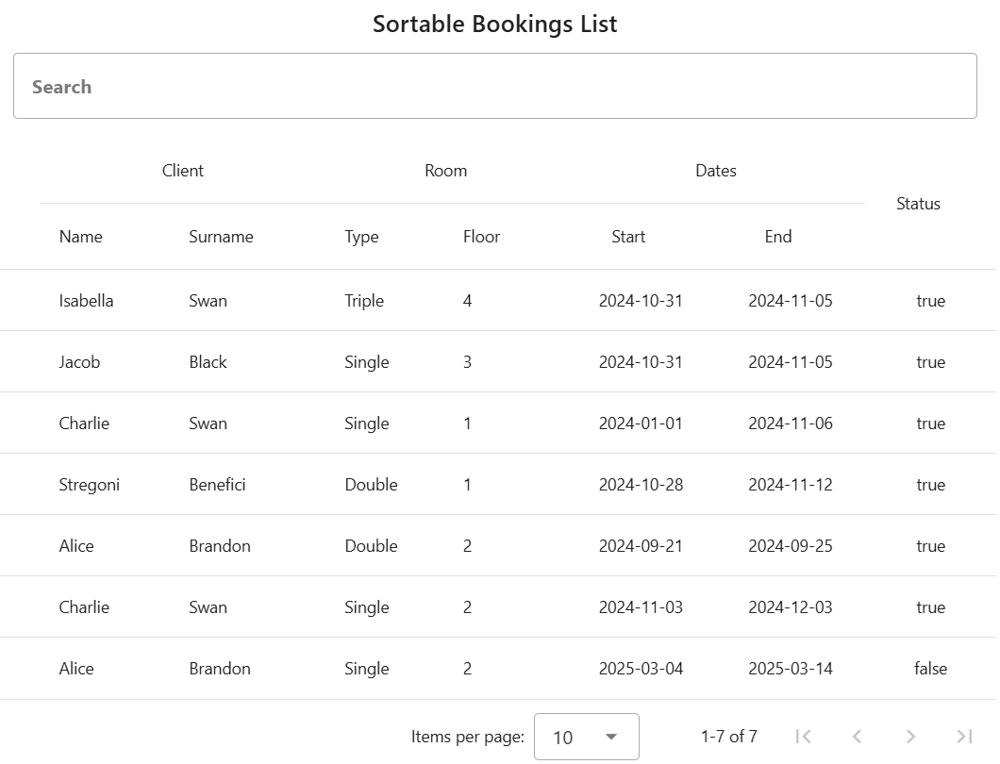
Cleanings Page
Каждая уборка, как и работник, имеет немного информации, но здесь они сразу представлены в форме таблицы. Теперь для каждой строки таблицы есть crud-кнопки в тандеме с поиском и сортировкой.
<template>
<div class="table-container">
<v-data-table
:headers="headers"
:items="cleanings"
:search="search"
class="elevation-2 styled-table"
items-per-page="6"
height="450"
>
<template v-slot:top>
<v-toolbar flat class="table-toolbar">
<v-toolbar-title class="v-toolbar_title">Hotel Cleanings</v-toolbar-title>
<v-text-field
v-model="search"
label="Search"
variant="outlined"
hide-details
single-line
></v-text-field>
<v-btn class="add-btn" color="green" @click="router.push('/cleanings/add')">
Add Cleaning
</v-btn>
</v-toolbar>
</template>
<template v-slot:item.actions="{ item }">
<div class="d-flex align-center justify-center action-buttons">
<v-btn variant="text" color="blue" @click="router.push('/cleanings/' + item.id)">
Edit
</v-btn>
<v-btn variant="text" color="red" @click="deleteCleaning(item.id)">
Delete
</v-btn>
</div>
</template>
</v-data-table>
</div>
</template>
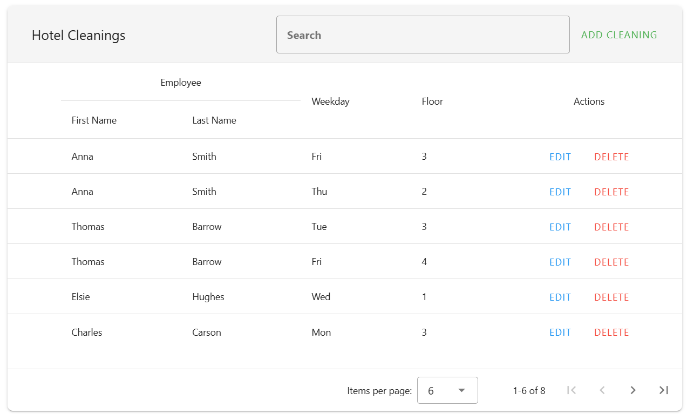
Было не обойтись без получения внешнего ключа - работника.
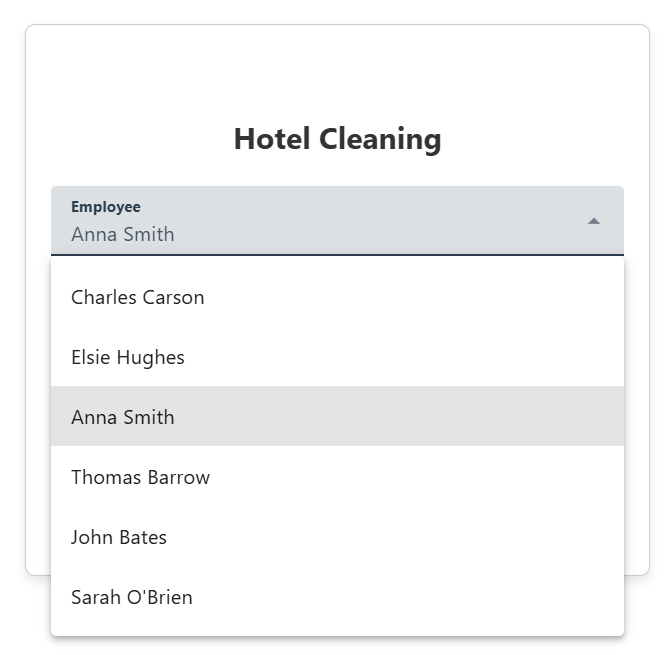
Ещё из интересного - радиокнопки для выбора этажа уборки.
<v-radio-group
v-model="form.floor_num"
inline
label="Floor Number">
<v-radio label="0" :value="0"></v-radio>
<v-radio label="1" :value="1"></v-radio>
<v-radio label="2" :value="2"></v-radio>
<v-radio label="3" :value="3"></v-radio>
<v-radio label="4" :value="4"></v-radio>
</v-radio-group>
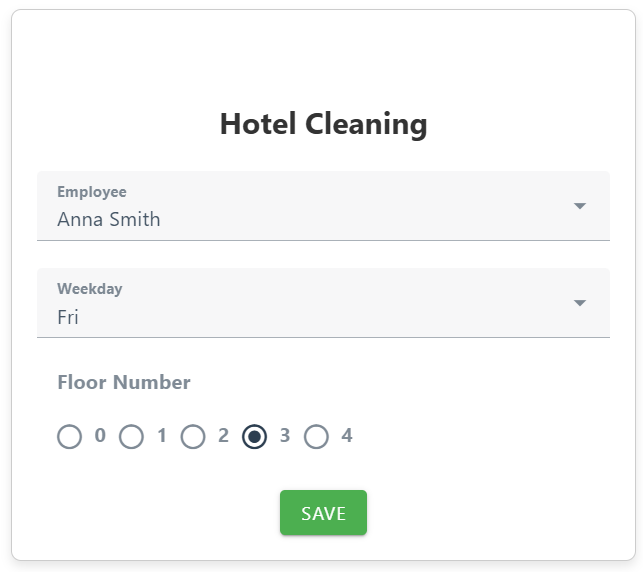
Quarter Report Page
Завершающая страница нашего обзора - отчёты по работе отеля за определённую четверть года. Два select-поля - выбор четверти и интересующей части отчёта.
function fetchReport() {
if (selectedQuarter.value && selectedPart.value) {
loading.value = true;
instance
.get(`/hotel/report/${selectedQuarter.value}/`)
.then((response) => {
reportData.value = response.data[selectedPart.value];
})
.catch((error) => {
console.error("Error fetching report:", error);
reportData.value = "Failed to load report.";
})
.finally(() => {
loading.value = false;
});
}
}
watch([selectedQuarter, selectedPart], fetchReport);
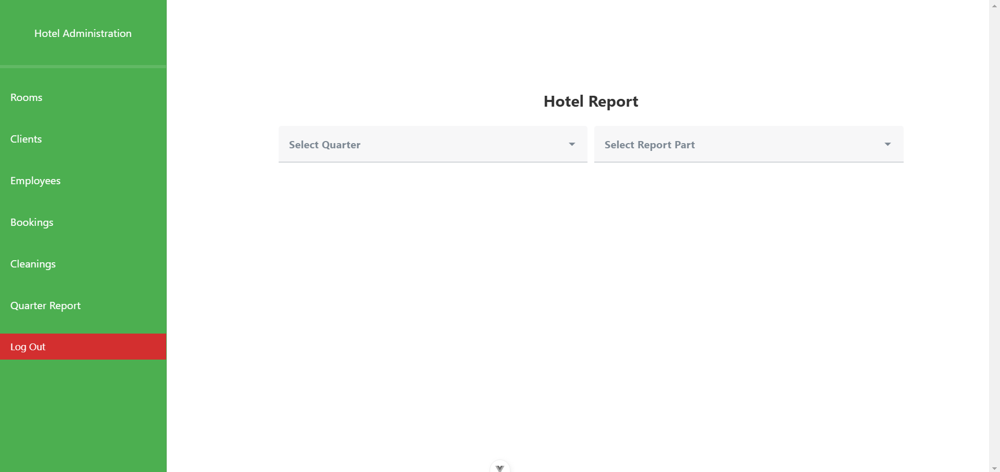
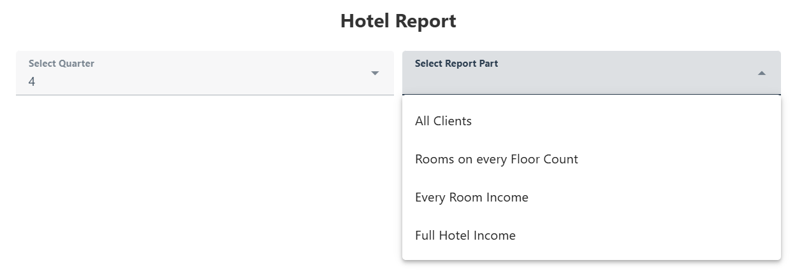
Пример вывода отчёта по условиям:
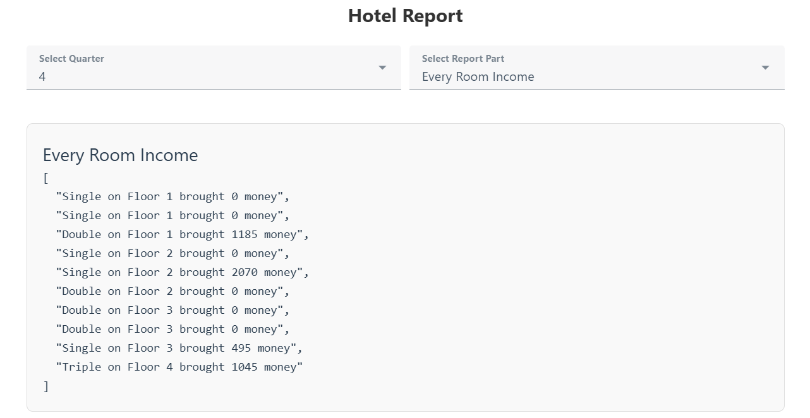